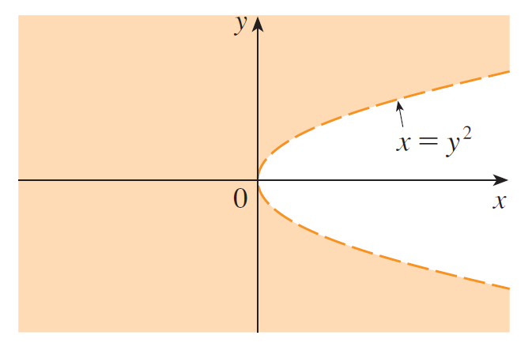
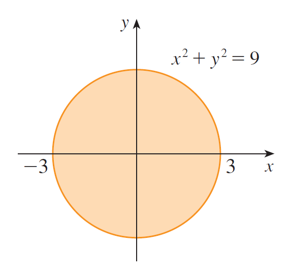
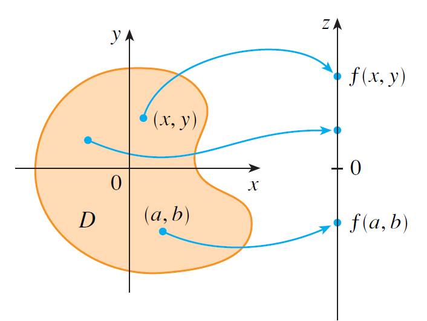
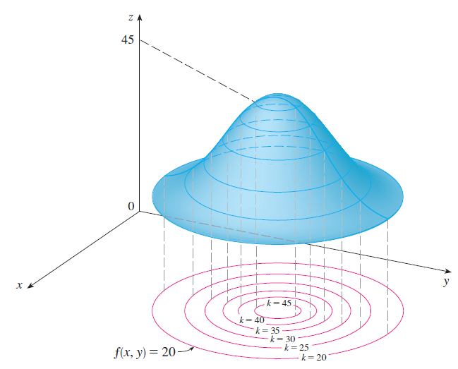
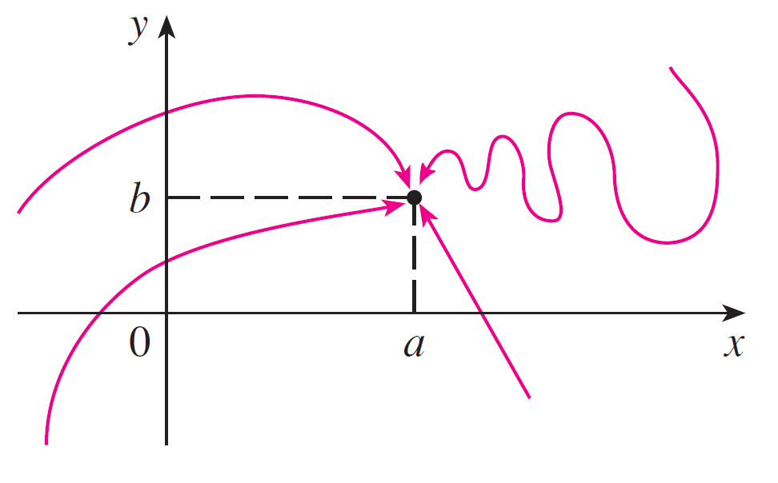

PARTE 2 · AULAS 06–08
Funções de várias variáveis
As funções de várias variáveis generalizam as funções de uma variável estudadas no Cálculo. Nesta seção, estudaremos funções de duas ou mais variáveis por diferentes formas de representação, analisando domínio, imagem, gráficos e curvas de nível. Em seguida, estenderemos os conceitos de limite e continuidade para funções cujo domínio está contido em \(\mathbb{R}^2\), \(\mathbb{R}^3\) ou, mais geralmente, \(\mathbb{R}^n\).
1. Funções de várias variáveis
Em muitos problemas, uma quantidade depende simultaneamente de duas ou mais variáveis independentes. A temperatura em uma placa, por exemplo, pode depender da posição \((x,y)\). Nesse caso, podemos escrever
Em outras situações, uma quantidade pode depender de três ou mais variáveis. O objetivo é estender para esses casos as ideias que já conhecemos para funções de uma única variável.
2. Quatro formas de representar uma função
Assim como ocorre com funções de uma variável, uma função de várias variáveis pode ser estudada de diferentes pontos de vista.
Verbalmente: por uma descrição em palavras.
Numericamente: por uma tabela de valores.
Algebricamente: por uma fórmula explícita.
Visualmente: por meio de um gráfico ou de curvas de nível.
Essas representações são complementares. Uma expressão algébrica pode facilitar cálculos, enquanto gráficos e curvas de nível ajudam a compreender geometricamente o comportamento da função.
3. Funções de duas variáveis
\(D\) é o domínio da função; \(x\) e \(y\) são as variáveis independentes; \(z=f(x,y)\) é a variável dependente.
A imagem é o conjunto de todos os valores que a função efetivamente assume:
4. Domínio de uma função de duas variáveis
Quando uma função é apresentada por uma fórmula e seu domínio não é especificado explicitamente, consideramos como domínio o conjunto de todos os pares \((x,y)\) para os quais a expressão fornece um número real bem definido.
Algumas restrições aparecem frequentemente:
Denominadores: não podem ser iguais a zero.
Raízes de índice par: o radicando deve ser não negativo.
Logaritmos: o argumento deve ser positivo.
5. Exemplo 1 — domínio com duas restrições
Considere
A raiz quadrada exige
Equivalentemente,
Além disso, o denominador deve ser diferente de zero:
Portanto,
Geometricamente, o domínio corresponde ao semiplano situado sobre a reta \(y=-x-1\), incluindo a própria reta, mas excluindo os pontos pertencentes à reta vertical \(x=1\).

6. Domínio e imagem
Determinar o domínio responde à pergunta: quais valores das variáveis independentes podem ser utilizados?
Determinar a imagem responde a outra pergunta: quais valores a variável dependente pode assumir?
Considere
Para que a raiz seja real,
Logo,
Portanto, o domínio é
Geometricamente, \(D\) é o disco fechado de centro \((0,0)\) e raio \(3\).
Para determinar a imagem, observamos que
Portanto,
e, consequentemente,
Assim,

7. Gráfico de uma função de duas variáveis
Há aqui uma diferença geométrica importante em relação às funções de uma variável:
Podemos visualizar a superfície \(S\) como situada diretamente acima ou abaixo de seu domínio \(D\) no plano \(xy\).

8. Curvas de nível
Nem sempre um gráfico tridimensional é a forma mais conveniente de visualizar uma função. Outra possibilidade é estudar suas curvas de nível.
Geometricamente, podemos imaginar a interseção da superfície \(z=f(x,y)\) com o plano horizontal
Projetando essa interseção sobre o plano \(xy\), obtemos uma curva de nível.

9. Exemplo 3 — curvas de nível
Considere
Para determinar as curvas de nível, fazemos
Portanto,
Como o lado esquerdo é não negativo,
Para \(c>0\),
Portanto, as curvas de nível são elipses centradas na origem, com semieixos
Para \(c=0\), a curva de nível reduz-se ao ponto \((0,0)\).
10. Mapa de contorno
Quando representamos simultaneamente diversas curvas de nível, obtemos um mapa de contorno.
O mapa de contorno fornece informações sobre a geometria da superfície sem exigir uma representação tridimensional.
11. Funções de três variáveis
A definição pode ser estendida naturalmente. Uma função de três variáveis associa a cada tripla ordenada \((x,y,z)\) de um domínio \(D\subseteq\mathbb{R}^3\) um único número real.
Um exemplo natural é a temperatura em uma região variando também com o tempo:
Nesse caso, duas variáveis descrevem a posição e uma terceira descreve o instante considerado.
12. Exemplo 4 — domínio em três variáveis
Considere
A única restrição decorre do logaritmo:
Portanto,
O domínio é
Geometricamente, esse domínio é o semiespaço formado pelos pontos situados acima do plano
13. Limites de funções de duas variáveis
Para uma função de uma variável, podemos aproximar \(x\) de \(a\) pela esquerda ou pela direita. Em duas variáveis, a situação é muito mais rica: o ponto \((x,y)\) pode aproximar-se de \((a,b)\) por infinitos caminhos.
Essa expressão significa que os valores de \(f(x,y)\) podem ser tornados arbitrariamente próximos de \(L\) tomando \((x,y)\) suficientemente próximo de \((a,b)\), mas diferente de \((a,b)\).

14. Definição formal de limite
Observe que
é exatamente a distância entre os pontos \((x,y)\) e \((a,b)\).
A definição depende apenas dessa distância e não da direção de aproximação. Portanto, se o limite existe, seu valor deve ser o mesmo independentemente do caminho utilizado.
15. Investigação por caminhos
Para investigar um limite em duas variáveis, podemos aproximar o ponto por diferentes caminhos.
Entre os caminhos mais simples estão
16. Exemplo 5 — limite inexistente
Considere
Vamos investigar
Primeiro, aproximamos a origem pelo eixo \(x\). Nesse caminho,
Então
Portanto,
Agora aproximamos a origem pelo eixo \(y\):
Nesse caso,
Logo,
Como
concluímos que
17. Propriedades dos limites
Quando os limites envolvidos existem, valem propriedades análogas às utilizadas para funções de uma variável.
Se
e
então:
18. Continuidade
Essa definição pressupõe três condições:
1. \(f(a,b)\) deve estar definida.
2. O limite \(\displaystyle\lim_{(x,y)\to(a,b)}f(x,y)\) deve existir.
3. O limite deve ser igual ao valor da função.
Dizemos que \(f\) é contínua em uma região \(D\) quando é contínua em todos os pontos dessa região.
19. Continuidade de funções usuais
As regras de continuidade conhecidas do Cálculo de uma variável permanecem fundamentais no contexto multivariável.
Polinômios em \(x\) e \(y\) são contínuos em todo \(\mathbb{R}^2\). Funções racionais são contínuas nos pontos em que seus denominadores são diferentes de zero.
Da mesma forma, composições de funções contínuas permanecem contínuas nos pontos em que todas as expressões envolvidas estão definidas.
20. Continuidade em três variáveis
A mesma ideia estende-se às funções de três variáveis.
Considere
Essa é uma função racional e, portanto, é contínua em todos os pontos em que o denominador é diferente de zero.
A descontinuidade ocorre quando
Geometricamente, esse conjunto é a esfera de centro na origem e raio \(1\).
Assim, \(f\) é contínua em
21. Extensão para \(\mathbb{R}^n\)
As definições anteriores podem ser reunidas utilizando notação vetorial. Considere
e
A distância entre esses pontos é dada pela norma euclidiana
Assim,
A continuidade assume então a forma compacta
22. Estratégia para estudar uma função de várias variáveis
Ao encontrar uma nova função \(f(x,y)\), uma sequência útil de análise é:
1. Identificar a expressão e as variáveis independentes.
2. Determinar o domínio.
3. Investigar a imagem quando possível.
4. Analisar o gráfico \(z=f(x,y)\).
5. Construir curvas de nível \(f(x,y)=k\).
6. Investigar limites nos pontos de interesse.
7. Verificar a continuidade.
23. Erros conceituais frequentes
Utilize o ambiente 3D para representar superfícies \(z=f(x,y)\), observar seus domínios e investigar geometricamente a relação entre superfícies e curvas de nível.
STEWART, J. Cálculo. Volume 2. São Paulo: Cengage Learning, 2013.